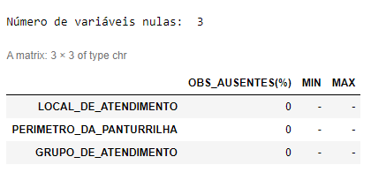
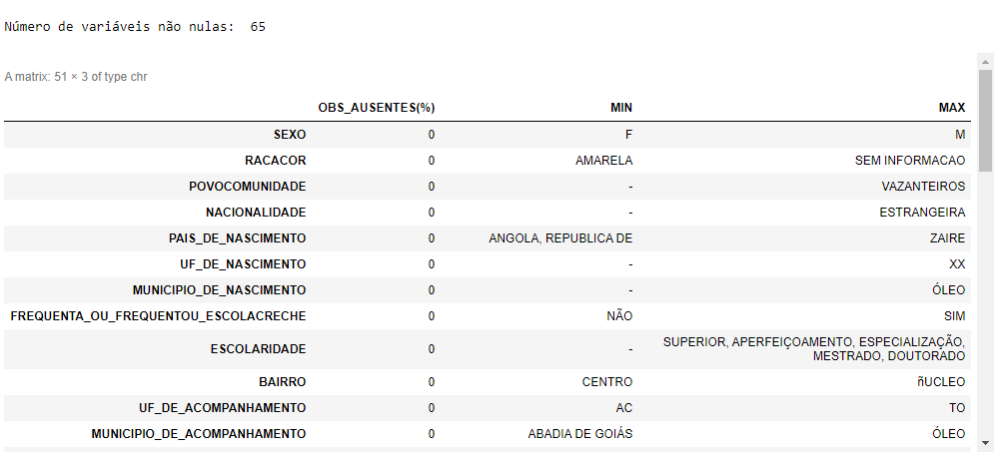
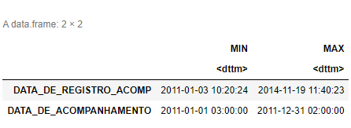
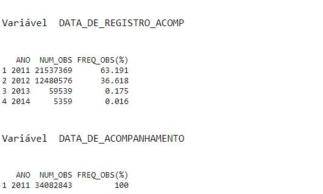
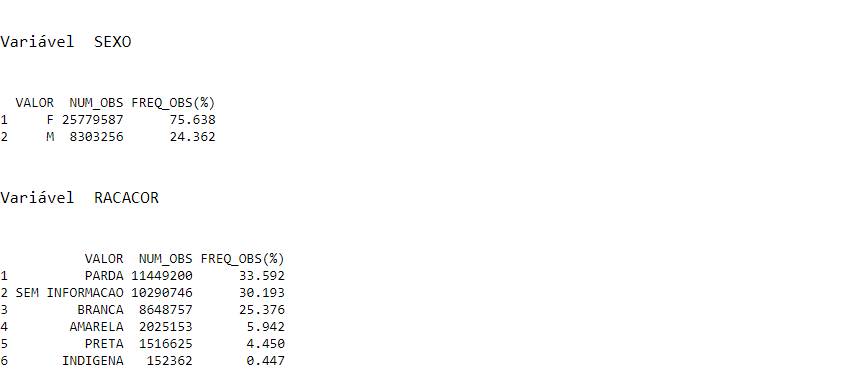

Dicionário Expandido
Documento entregue em: 2022-08-18
- Essa versão v0.1:
- estrutura-descritivas.pdf
- Versão anterior:
- estrutura-descritiva-v_X.Y.pdf
- Modelo disponível em:
- Repositório Público/Profissional de Descritivas
- Autores:
- Maíra Souza, Fiocruz
- Luís Conrado, Fiocruz
- Eric Carvalho, Fiocruz
- Priscila Normando, Fiocruz
- Gabriel Cavalcante, Fiocruz
- Contribuidores:
- Samilla Sena, ...
- Outros formatos:
-

-
- Licença:

- Visualização:

Reconhecimentos voltarTdC
Os autores gostariam de agradecer à Fiocruz pelo fornecimento de aparatos à possibilidades de construir soluções e resoluções a problemáticas em Serviços e Processos relacionados à Curadoria digital de Dados em parceria indireta com o Ministério da Saúde.
Introdução voltarTdC
A estrutura geral do arquivo de Descritivas segue um padrão desenvolvido pelo Núcleo de ... desde de. Portanto, este arquivo pode servir como um repositório central das especificações necessárias à confecção de uma descritiva sobre determinada base de dados. Facilitando, assim, tanto o desenvolvimento sobre elementos da especificação, como 'Gerar Relatório de Variáveis Nulas', quanto em sua manutenabilidade, propiciando, inclusive, um histórico nas atualizações deste documento.
Variáveis Nulas voltarTdC
-> As variáveis nulas representam aquelas variáveis de preenchimento completamente ausentes ao longo da base de dados. (proveniência: de onde veio essa definição?) ex: VAR | OBS_AUSENTES (%) | MIN | MAX LOCAL_DE_ATENDIMENTO 0 -
Exemplo:

Variáveis Não nulas voltarTdC
-> [breve descrição] ex: VAR| OBS_AUSENTES(%) MIN MAX SEXO 0 F M RACACOR 0 AMARELA SEM INFORMACAO …
Exemplo:

Variáveis Tipo Data voltarTdC
-> [breve descrição] ex: VAR MIN MAX DATA_DE_REGISTRO_ACOMP 2011-01-03 10:20:24 2014-11-19 11:40:23 DATA_DE_ACOMPANHAMENTO 2011-01-01 03:00:00 2011-12-31 02:00:00
Exemplo:

Frequência ANO-DATA voltarTdC
-> [breve descrição] ex: [NOME_VAR] DATA_DE_REGISTRO_ACOMP ANO | NUM_OBS | FREQ_OBS (%) 2011 21537369 63.191
Exemplo:

Frequência de Valores por Variável (100) voltarTdC
-> [breve descrição] ex: [NOME_VAR] Variável RACACOR VALOR NUM_OBS FREQ_OBS(%) PARDA 11449200 33.592 SEM INFORMACAO 10290746 30.193 BRANCA 8648757 25.376 –
Exemplo:

Frequência entre Duas Variáveis (crosstable) voltarTdC
-> [breve descrição] ex: [NOME_VAR_1] [NOME_VAR_2] [NOME_VAR_1] x [NOME_VAR_2] Variável linha crosstable SEXO (virou linhas) Variável coluna crosstable RACACOR (virou colunas) AMARELA BRANCA INDIGENA PARDA PRETA SEM.INFORMACAO M 582643 2423412 31566 2423287 253940 2588408 F 1442510 6225345 120796 9025913 1262685 7702338